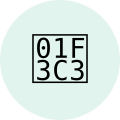
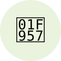
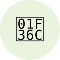
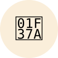
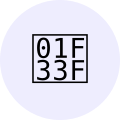
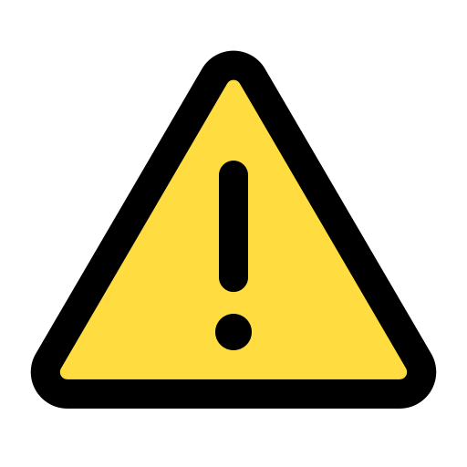

 |
1 - Le Sport | Endorphines, dopamine, sérotonine… le cerveau en mode fête. La seule addiction vraiment recommandée par les médecins. Bon pour le cœur, les muscles et le moral. | Bénéfique |
|  |
2 - La nourriture | Essentielle à la survie. En excès ça peut poser problème (obésité, troubles alimentaires), mais globalement… c'est fait pour ça. | Vital |
|  |
3 - Le Sucre | Dopamine facile. À haute dose : caries, diabète de type 2 et dépendance légère au programme. Le cerveau en redemande toujours. | Bénéfique |
|  |
4 - L'Alcool | Légal et socialement accepté, mais franchement pas terrible pour le foie et le cerveau sur la durée. Dépendance physique possible. | Risque modéré |
|  |
5 - Le Cannabis | Impact cognitif sur les jeunes cerveaux, risques respiratoires, dépendance psychologique possible. Effets amplifiés chez les adolescents. | Risque élevé |
| 6 - League of Legends | Manque de sommeil chronique, rage incontrôlable, toxicité du chat, abandon des études, perte
de la notion du temps… et pourtant on relance une partie.
Tu veux quand même installer ?
 |
NE PAS TOUCHER | |